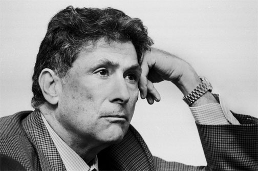

East Asian Stereo types
From Wikipedia, the Free Encyclopedia:
This article focuses on American stereotypes of East Asians, though certain parts are applicable to other groups. For other Asians, please see Stereotypes of South Asians.
IN THE U.S.
Stereotypes of East Asians are ethnic stereotypes found in American society. Stereotypes of East Asians, like other ethnic stereotypes, are often manifest in a society's media, literature, theater and other creative expressions. Stereotypes of East Asians have been largely collectively internalized by society and these stereotypes have mainly negative repercussions for East Asians and East Asian immigrants in daily interactions, current events, and governmental legislation.
Read More >>
Orientalism, Mysticism and Exoticism
According to Edward Said, orientalism refers to the manner in which West interprets or comes to terms with their experiences and encounters with the foreign, unfamiliar Orient, or the East.
Said claimed that "the Orient" was a European invention to denote East Asia as a place of exoticism, romance, and remarkable experiences and also as a concept to contrast against Western civilization.
Stereotypes of Exclusion or Hostility
"Yellow Peril"
The term "Yellow Peril" refers to a White apprehension, peaking in the late 19th-century, that white inhabitants of Australia, New Zealand, South Africa, Canada, or the United States would be overwhelmed and swamped by a massive influx of East Asians; who would fill the nation with a foreign culture and speech incomprehensible to those already there and steal jobs away from the white inhabitants and that they would eventually take over and destroy western civilization, their ways of life, culture and values.
Perpetual Foreigner
There is a widespread perception that Asian Americans are not "American" but are instead "perpetual foreigners". Asian Americans often report being asked the question, "Where are you really from?" by other Americans, regardless of how long they or their ancestors have lived in United States and been a part of its society.[11] Many Asian Americans are themselves not immigrants but rather born and raised in the United States. Asian Americans have been perceived, treated, and portrayed by many in US society as "perpetual" foreigners who are unable to be assimilated and inherently foreign regardless of citizenship or duration of residence in the United States.
Model Minority Stereotype
Asian Americans have also been stereotyped as a "model minority"; that is, traits perceived as positive are applied as a stereotype. Asians as a whole are seen as hardworking, politically inactive, studious, intelligent, productive, and inoffensive people who have elevated their social standing through merit and diligence. Some theorize that this can be attributed to Asians' worldwide disproportionate business success as a middleman minority, as discussed in Amy Chua's book World on Fire.
However, some Asian Americans believe the model minority stereotype to be damaging and inaccurate, and are acting to dispel this stereotype.[20] Scholars, activists, and most major American news sources have started to oppose this stereotype, calling it a misconception that exaggerates the success of Asian Americans.
Read More on Model Minority >>
“...the model minority
stereotype ...
covers up actual
Asian American issues
and needs that are still
not properly
addressed
in America today.”
Archetypes
Fu Manchu and Charlie Chan are two important and well-known fictional East Asian characters in America's cultural history. Both were created by white authors, Sax Rohmer and Earl Derr Biggers respectively, in the early part of the 20th century.
Fu Manchu: "Evil" East Asian
Thirteen novels, three short stories, and one novelette have been written about Fu Manchu and Sir Denis Nayland Smith, the British agent determined to stop him. Millions of copies have been sold in the United States with publication in British and American periodicals and adaptations to film, comics, radio, and television. Due to his enormous popularity, the "image of Fu Manchu has been absorbed into American consciousness as the archetypal East Asian villain.".
Sax Rohmer inextricably tied the evil character of Fu Manchu to all East Asians as a physical representation of the Yellow Peril, attributing the villain's evil behavior to his race.
Charlie Chan: "Good" East Asian
Charlie Chan, a fictional character created by author Earl Derr Biggers loosely based on Chang Apana (1871–1933), a real-life Chinese-Hawaiian police officer, has been the subject of 10 novels (spanning from 1925 to as late as 1981), over 40 American films, a comic strip, a board game, a card game, and a 1970s animated television series. In the films, the role of Charlie Chan has usually been played by white actors (namely Warner Oland, Sidney Toler, and Roland Winters).
In stark contrast to the Chinese villain Fu Manchu, East Asian American protagonist Charlie Chan represents the American archetype of the "good" East Asian.
Stereotypes of
East Asian Men
Sex Symbols
In the early stage of Hollywood's film production, East Asian males such as Sessue Hayakawa exhibited their male attractiveness both on and off screen, but they became the victim of their own success when their popularity caused dissension.
Misogynists
Another stereotype of East Asian men is that they are misogynistic, insensitive, and disrespectful towards women. They are commonly portrayed as male chauvinists.
Emasculation and Asexuality
In the mid-1800s, Chinese laborers were given an emasculated image due to their physical appearance, and the fact that they did what Americans considered to be "women's work."
Read more about the Emasculation and Asexuality Stereotype >>
Predators of White Women
East Asian men have been portrayed as threats to white women[63] in many aspects of American media. Depictions of East Asian men as "lascivious and predatory" were common at the turn of the 20th century.
Changing Perceptions of East Asian Males
More recent media depictions of East Asian males are at a seeming variance with traditional stereotypes. Study findings from an analysis of the TV show Lost suggest that increased globalization is responsible for providing a more multidimensional and complex portrayal of East Asian males in televised media.
Stereotypes of
East Asian Women
The Dragon Lady
East Asian women have been portrayed as aggressive or opportunistic sexual beings or predatory gold diggers using their feminine wiles.[73] Western film and literature has continually portrayed such stereotypes of East Asian women: depicting East Asian women as cunning "Dragon Ladies". This is contrasted with the other stereotypes of servile "Lotus Blossom Babies", "China dolls", "Geisha girls", war brides, or prostitutes.
Read more on The Dragon Lady >>
China Doll Stereotype
According to author Sheridan Prasso, the China [porcelain] doll stereotype and its variations of feminine submissiveness recurs in American movies. These variations can be presented as an associational sequence such as: "Geisha Girl/Lotus Flower/Servant/China Doll: Submissive, docile, obedient, reverential; the Vixen/Sex Nymph: Sexy, coquettish, manipulative; tendency toward disloyalty or opportunism; the Prostitute/Victim of Sex Trade/War/Oppression: Helpless, in need of assistance or rescue; good-natured at heart."
Read more about the China Doll >>